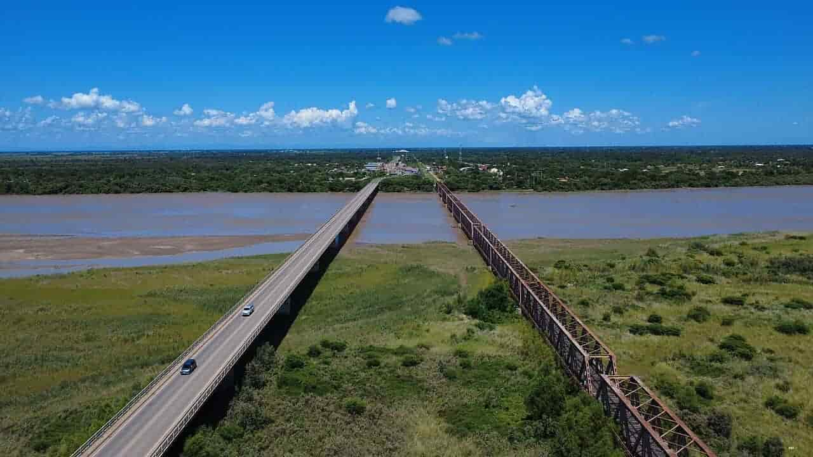
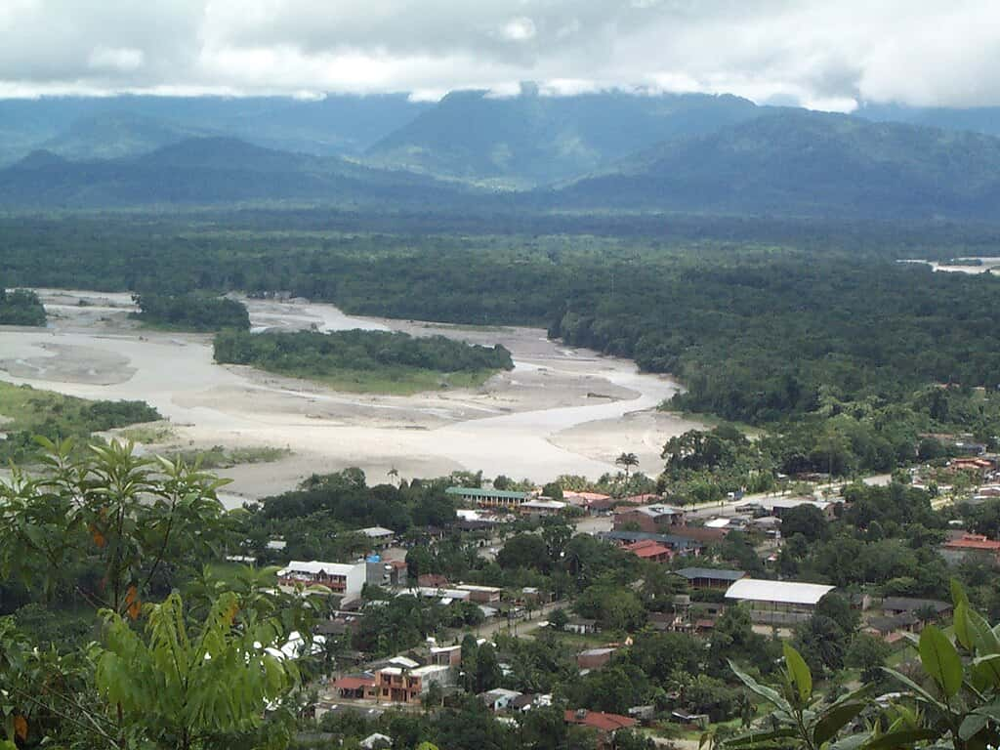
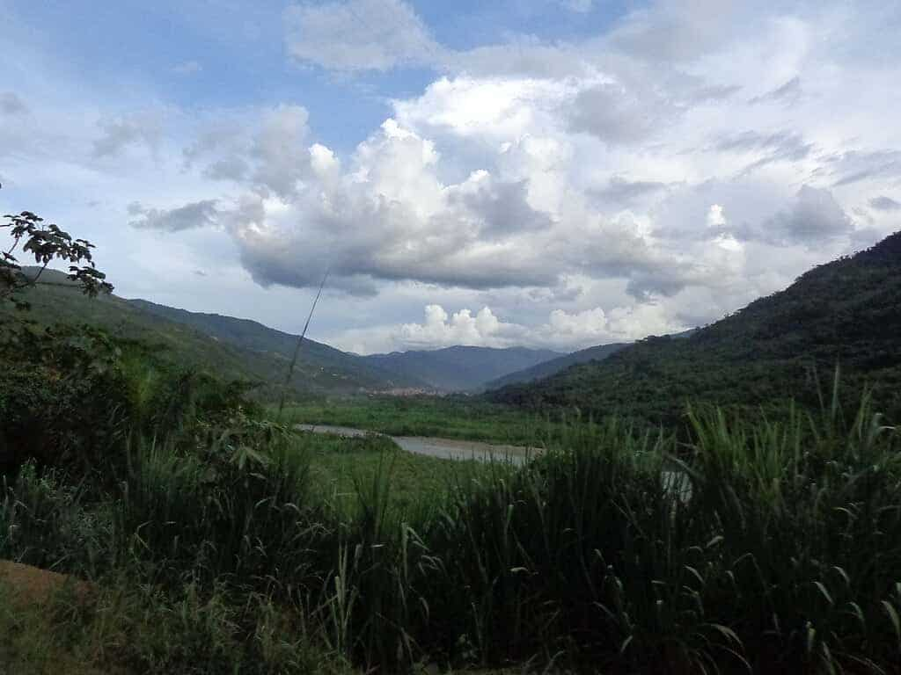

Our Exciting Rafting Trips in Bolivia
Explore thrilling white water rafting adventures on Bolivia's most exciting rivers. Choose your adventure and experience the thrill with our expert guides!

Grande River
The River Grande offers intermediate-level rapids perfect for those seeking excitement without compromising safety. Enjoy breathtaking scenery as you navigate its currents.

Espiritu Santo River
This river combines challenging rapids with spectacular views of the Bolivian rainforest. Ideal for adventurers who want an exciting trip accompanied by expert guides.

Coroico River
Perfect for beginners and families, the Coroico River offers gentle rapids and beautiful natural scenery. A safe and fun way to learn basic rafting techniques.